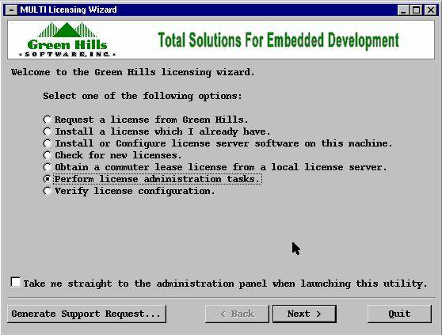

user: setupadm command: /home/setupadm/mri/lmgrd -c license.dat -l log.log ------------------------------------------------------------Codewizard
user:asamtool command:/home2/tools/codewizard/LicenseServer/licserv.d start to add licenses edit /home2/tools/codewizard/LicenseServer/.psrc file to view licenses use http://asamap1:2002 -------------------------------------------------------------------Crisp
user:asamtool command:/home2/tools/crisp/bin.sol26-sparc/lmcrisp stats-usage: /home2/tools/crisp/bin.sol26-sparc/lmcrisp -licinfo -------------------------------------------------------------------DDTS,ClearQuest,Purify,Purify Plus
user:ddts command: cd /home2/ddts/bin/ ./lmgrd -c /home2/ddts/license.dat -l logl.log -------------------------------------------------------------WTX
user:ayanavo setview srini_view (or any other view) export LD_LIBRARY_PATH=$LD_LIBRARY_PATH:/cm4/tools/WRS/tornado/ppc/host/sun4-solaris2/lib export WIND_BASE=/cm4/tools/WRS/tornado command: cd /cm4/tools/WRS/tornado/ppc/host/sun4-solaris2/bin ./wtxregd & ----------------------------------------------------------------------GHS
user:ayanavo export GHS_LMHOST=asamap1 command /home2/tools/GHS/Sghs_elmd start deamon_to_run: /cm4/tools/WRS/tornado/ppc/host/sun4-solaris2/bin/wtxregd elmadmin -l give info on the installed licenses. Keys are generated in /home2/tools/GHS/keys:/home2/tools/GHS/tmp/keys directory using command "4800000225_4800000586_*.sh /cm4/tools/GHS/ppc" after keys are generated modify Sghs_elmd to modify the path for keys directory To install licenses date_24_Nov_2005_key_install_for_asamap1.sh /home2/tools/GHS /home2/tools/GHS/keys
==================================================================================================
GHS-Multi License (This includes user based licenses)
Note:
Stop both lm and Sghs_elmd process before starting below steps
Step 1: Login to asamap1 as vobadm with respective password
Step 2: Set vobadm_view
Step 3:
cd /cm4/tools/GHS/multi/solaris2Step 4: Check out ecomppc, ccomppc and lm. (/main/test/1) if not.
Step 5: Export proper DISPLAY and execute
mlmadmin

Step 6: Select “
Install a license which I already have” or “Perform License administration tasks” and point your license file for installation.Step 7: mlmadmin will display the acknowledgment after installing the license. Close mlmadmin after successful installation.
Step 8: Login to asamap1 as ayanavo with respective password on another terminal
Step 9: After successful installation execute below both daemons
/cm4/tools/GHS/multi/solaris2/lm -l /home2/tools/GHS/lm_log.log
and
/home2/tools/GHS/Sghs_elmd start
Step 10: execute /cm4/tools/GHS/multi/solaris2/find_ghs_licenses command to check the status of the installed license.
Step 11: execute ps –ef | grep –i ghs //To confirm whether both the processes are running or not.
ayanavo 5643 1 0 13:50:42 ? 2:09 /home2/tools/GHS/./ghs_elmd -e /home2/tools/GHS/keys:/home2/tools/GHS/tmp/keys
ayanavo 5685 1 0 13:52:57 ? 0:04 /cm4/tools/GHS/multi/solaris2/lm -l /home2/tools/GHS/userbasedlic_Sep_19.log
Step 12: Finally ask the users to check and confirm whether the licenses are accessible or not.
==============================================================================================================
For Userbased Licenses(Eg:alcatelbuild)
Green Hills License Manager ============================ * How to check if licenses are running ok : -------------------------------------------- setenv GHS_LMHOST licserv1 /ap/flexadmin/Green_Hills/find_ghs_licenses should return active keys example output : Server bt0q16:2009 (138.203.86.90): ecomarm (3401): 1 installed, 1 in use, 1 hwm simarm (540): 1 installed, 0 in use, 0 hwm ... (note : 'find_ghs_licenses -b' returns license activity for all Green Hills license servers) You can also check the license daemon log file for more info on check in/out activities or reasons why the license daemon is not working as expected : /ap/flexadmin/Green_Hills/logfile.log * How to install new license keys : ------------------------------------- - login on licserv1 license server as user flexadm : ssh licserv1 -l flexadm cd /ap/flexadmin/Green_Hills - check out (rcs) the old license file : /ap/tools/bin/co -l license.lck - replace old license file with new license file : cp license_new.lck license.lck - check in (rcs) the license file /ap/tools/bin/ci -u license.lck - Start the Green Hills MultiLicensing wizard : mlmadmin - Select "Install a license which I already have." & click "Next" - Select the file license.lck & click "Install" - Click on Quit - stop the lm license daemon (kill the 'lm' process) use the following command to find the lm process id : /bin/ps -ef | egrep '/Green_Hills/lm' kill <lm-pid> - remove the previous reservation from the userlist.txt file : glicusers ecomarm -d build_isam - add the user again to the userlist.txt file : glicusers ecomarm -a build_isam - start the license daemon again : /ap/flexadmin/Green_Hills/lm - check the licenses : setenv GHS_LMHOST licserv1 find_ghs_licenses * To (re)start (& stop) the license daemon -------------------------------------------- - login on licserv1 license server as user flexadm : ssh licserv1 -l flexadm cd /ap/flexadmin/Green_Hills - stop the lm license daemon (kill the 'lm' process) use the following command to find the lm process id : /bin/ps -ef | egrep '/Green_Hills/lm' kill <lm-pid> - start the license daemon again : /ap/flexadmin/Green_Hills/lm - check the licenses : setenv GHS_LMHOST licserv1 find_ghs_licenses
Important Note:
Finally start lm, /cm4/tools/GHS/multi/solaris2/lm -l /cm4/tools/GHS/multi/solaris2/logfile.log
-----------------------------------------------------------------------Prism
cd /home2/tools/Prism /home2/tools/Prism/lmgrd -c license.dat -l lm_Oxx.log __________________________________________________________________Wind River
user: ayanavo location: /home2/tools/Prism Command ./lmgrd -c /home2/tools/Prism/WRSLicense -l WRSlm_xx.log ___________________________________________________________________ If encoutering port usage and lmgrd problems check ps -ef |grep lmgrd to see multiple deamons running kill all and rerun (use only kill not kill -9) use /usr/local/bin/lsof to check the port command in use kill lock files in /usr/tmp and /var/tmp ------------------------------------------------------------------------SilverCreek
Vendor : InterWorking Labs user: ayanavo location : /home2/tools/SilverCreek command: /home2/tools/SilverCreek/bin/start-license-server Note: old licenses were available in /home2/tools/SilverCreek/wgserver8.3/start.sh ------------------------------------------------------------------------Tornado
cd /home2/tools/Tornado2.2 ./lmgrd -c /home2/tools/Tornado2.2/WRSLicense.lic -l /home2/tools/Tornado2.2/lmrgd.log
Error:tgtsvr
Cannot contact Wind Registry on host: asamap1 tgtsvr.ex
Solution:
user:ayanavo setview srini_view (or any other view) export LD_LIBRARY_PATH=$LD_LIBRARY_PATH:/cm4/tools/WRS/tornado/ppc/host/sun4-solaris2/lib export WIND_BASE=/cm4/tools/WRS/tornado command: cd /cm4/tools/WRS/tornado/ppc/host/sun4-solaris2/bin ./wtxregd &